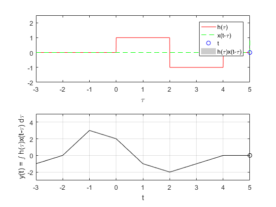

Práctica 4: Convolución y Correlación de señales en tiempo continuo
Alvarado Balbuena Jorge Anselmo
Contents
Problema 1
Parametros x -> Funcion que se movera h -> Funcion que se dejara fija tm -> Valor minimo de tau para la visualizacion tM -> Valor maximo de tau para la visualizacion ym -> Valor minimo yM -> Valor maximo function [] = ConvConm( x, h, tm, tM, ym, yM ) figure (1) % Se crea una figura para hacer las gráficas dtau = 0.005; % Base de los rectangulos para realizar la integral tau = tm:dtau:tM; % Intervalo de visualización del resultado ti = 0; % Indice para el vector de resultados tvec = tm:.1:tM; % traslaciones de t, cuantas integrales se calulan y = NaN*zeros(1, length (tvec)); % Resultados de acuerdo a cuantos t for t = tvec, % Cantidad de traslaciones ti = ti+1; % Indice para guardar el resultado (indice del tiempo) xh = x(t-tau).*h(tau); % resultado de la multiplicación lxh = length(xh); % longitud del resultado y(ti) = sum(xh.*dtau); % Base por altura, aproximación de la integral subplot (2,1,1), % gráfica de 2 x 1 (primera) plot(tau, h(tau), 'r-', tau, x(t-tau), 'g--', t, 0, 'ob'); %graficas axis ([tau(1) tau(end) -2.0 2.5]); % límites de los ejes patch([tau(1:end-1); tau(1:end-1); tau(2:end); tau(2:end)],... [zeros(1,lxh-1);xh(1:end-1);xh(2:end);zeros(1,lxh-1)],... [.8 .8 .8], 'edgecolor', 'none'); xlabel('\tau'); % Texto del eje X legend('h(\tau)', 'x(t-\tau)','t','h(\tau)x(t-\tau)')% Caja de Texto subplot (2, 1, 2) % gráfica de 2 x 1 (segunda) plot (tvec, y, 'k', tvec (ti), y(ti), 'ok'); xlabel ('t'); ylabel ('y(t) = \int h(\tau)x(t-\tau) d\tau'); axis ([tau(1) tau(end) ym yM]); % límites del eje grid; % malla drawnow; % efecto de movimiento continuo end end
Problema 2
Convolución
%t = -3:.01:3;
h = @(t) (t<0.5 & t>-0.5);
x = @(t) (t<0.5 & t>-0.5);
ConvConm(h, x, -2, 2, -2, 2);
Problema 3
Convolución
%t = -1:.01:3;
f = @(t) (exp(-t)).*(t>=0 & t<=1);
g = @(t) (t).*(t>=-1 & t<=1);
ConvConm(g, f, -2, 3, -1, 1);
Problema 4
Autocorrelación
%t = -5:.01:5;
k = @(t) (t>=0)-2.*(t>2)+(t>4);
ki = @(t) (-t>=0)-2.*(-t>2)+(-t>4);
ConvConm(ki, k, -3, 5, -4, 5);
Problema 5
l = @(t) (t>=0)-2.*(t>3)+(t>4); li = @(t) (-t>=0)-2.*(-t>3)+(-t>4); ConvConm(li, l, -3, 5, -3, 5);
Problema 6
ConvConm(li, k, -3, 5, -3, 5);
Problema 7
ConvConm(ki, l, -3, 5, -3, 4);